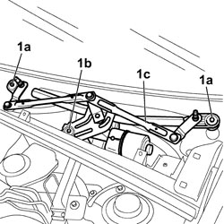
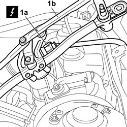

5050B38 WINDSCREEN WIPER ASSEMBLY - R+R OR REPAIR
- Path
- Procedures > 50 AUXILIARY UNITS > 5050 SCREEN WASHERS AND HEADLAMP WASH/WIPE > 5050B WINDSCREEN WASH/WIPE > 5050B38 WINDSCREEN WIPER ASSEMBLY - R+R OR REPAIR
- Kind
- repair procedure (removal / refitting; the operation number is the code)
- Applies to
- all engines; all production periods
- Interactive page
- https://sloeber94.github.io/elrnDB-fCrm/en/#/194000652
Applies to: all engines; all production periods
 Removing
Removing
 Refitting
Refitting- Turn the ignition key to the OFF position.
- Open the bonnet.
- Disconnect the negative battery terminal.
Description | Connector | |
|---|---|---|
BATTERY |
Op. 5050B32 WINDSCREEN WIPER ARM/S - R+R
Op. 7210E22 R.R. WINDSCREEN BASE TRIM
1. Working in the engine compartment at the base of the windscreen, undo the nuts (1a) and the bolt (1b) then detach the windscreen wiper control (1c) from the housing and rotate it to gain access to the electrical connection.

Applies to: all engines; all production periods
1. Release the electrical connection (1a) from the mounting and disconnect it from the motor, then remove the windscreen wiper control (1b) from the vehicle.
Description | Connector | |
|---|---|---|
1a | WINDSCREEN WIPER MOTOR |

Applies to: all engines; all production periods
Refitting
Removing- Check that the windscreen wiper control is not damaged.
- Connect the electrical connection to the motor.
Description | Connector | |
|---|---|---|
WINDSCREEN WIPER MOTOR |
- Place the windscreen wiper assembly in position, screw in the fixing nuts and the bolt and tighten to the recommended torque.
Component | Fastening | dia | Value (daNm) | Validity |
|---|---|---|---|---|
WINDSCREEN WIPER ASSEMBLY ON BRACKET | Bolt | M6 | 0,8 ÷ 1,2 |
Op. 7210E22 R.R. WINDSCREEN BASE TRIM
Op. 5050B32 WINDSCREEN WIPER ARM/S - R+R
- Connect the negative battery terminal.
Description | Connector | |
|---|---|---|
BATTERY |
- Close the bonnet.
- Check that the windscreen wiper assembly is working.
Topics linked from this page (4)
- 5050B32 WINDSCREEN WIPER ARM/S - R+R
- 7210E22 R.R. WINDSCREEN BASE TRIM
- A001 BATTERY
- N015 WINDSCREEN WIPER MOTOR